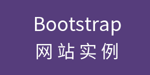
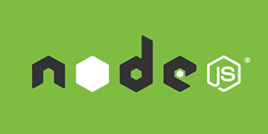

优站精选
Bootstrap 网站实例
Bootstrap 优站精选频道收集了众多基于 Bootstrap 构建、设计精美的、有创意的网站。

Webpack
是前端资源模块化管理和打包工具
Webpack 是当下最热门的前端资源模块化管理和打包工具。它可以将许多松散的模块按照依赖和规则打包成符合生产环境部署的前端资源。

TypeScript
中文手册
TypeScript 是由微软开源的编程语言。它是 JavaScript 的一个超集，而且本质上向这个语言添加了可选的静态类型和基于类的面向对象编程。

Svelte
中文网
Svelte 是构建 Web 应用程序的一种新方法。Svelte 是一个编译器，它将声明性组件转换成高效的 JavaScript 代码，并像做外科手术一样细粒度地更新 DOM。

Next.js
中文文档
Next.js 是一个轻量级的 React 服务端渲染应用框架。

Node.js
中文文档 / 手册
Node.js 是一个基于 Chrome V8 引擎的 JavaScript 运行环境。Node.js 使用了一个事件驱动、非阻塞式 I/O 的模型，使其轻量又高效。

Deno
中文文档
Deno 是一个简单、现代且安全的 JavaScript 和 TypeScript 运行时，deno 基于 V8 引擎并使用 Rust 编程语言构建。

Yarn
中文手册
Yarn 是一个快速、可靠、安全的依赖管理工具。是 NPM 的替代品。
Yarn v2
中文手册
Yarn 是一个快速、可靠、安全的依赖管理工具。是 NPM 的替代品。Yarn v2 与 v1 版本有很大的不同，Yarn v2 改进了 CLI 交互、支持 workspace、PnP 等新功能。

NPM
中文文档
NPM（node package manager）是 Node.js 世界的包管理器。NPM 可以让 JavaScript 开发者在共享代码、复用代码以及更新共享的代码上更加方便。

Lerna
中文文档
Lerna 是一个管理工具，用于管理包含多个软件包（package）的 JavaScript 项目。

Vue.js
中文文档。
Vue.js - 是一套构建用户界面的渐进式框架。

Nuxt.js
中文文档
Nuxt.js 是一个基于 Vue.js 的通用应用框架。通过对客户端/服务端基础架构的抽象组织，Nuxt.js 主要关注的是应用的 UI渲染。

Recoil
React 状态管理库
Recoil 是一个针对 React 应用程序的状态管理库。 它提供了仅使用 React 难以实现的几种功能，同时与 React 的最新功能兼容。

Redux
中文文档
Redux 是 JavaScript 状态容器，提供可预测化的状态管理、构建一致化的应用，运行于不同的环境（客户端、服务器、原生应用），并且易于测试。

Parcel
中文文档
Parcel - 极速、零配置的 web 应用打包工具。

Lodash
JavaScript 工具库
Lodash 是一个具有一致接口、模块化、高性能等特性的 JavaScript 工具库。比相同功能的 Underscore.js 使用更广泛。

Pro Git
Git 入门到专家指南
Pro Git 中文版（第二版）是一本详细的 Git 指南，主要介绍了 Git 的使用基础和原理，让你从 Git 初学者成为 Git 专家。
Bootstrap Icons
Bootstrap 专用 SVG 图标集
Bootstrap Icons 的设计初衷是与 Bootstrap 组件配合使用。Bootstrap Icons 全部是 SVG 文件，因此能够轻松快捷地进行缩放，并可以通过 CSS 设置样式。虽然 Bootstrap Icons 是为 Bootstrap 而开发的，但它也可以应用于任何项目。

Rollup
新一代的 JavaScript 模块打包工具
Rollup 是一个 JavaScript 模块打包工具，可以将小块代码编译成大块复杂的代码。Rollup 对 JavaScript 代码模块使用新的 ES6 标准化格式，如 CommonJS 和 AMD。

Preact
React 轻量替代方案。
Preact - 一个只有 3kB 大小的 React 替代品，拥有与 React 相同的 API、组件和虚拟 DOM。

PurgeCSS
中文网
PurgeCSS 是一个用来删除未使用的 CSS 代码的工具，能够减小 CSS 文件的体积。例如可以用来减小 Bootstrap 等前端框架的文件体积，提升加载速度。

gulp.js
基于流的自动化构建工具。
gulp.js - 基于流(stream)的自动化构建工具。Grunt 采用配置文件的方式执行任务，而 Gulp 一切都通过代码实现。

Markdown
中文手册及速查表
Markdown 是一种轻量级标记语言，便于人们使用易读易写的纯文本格式编写文档并添加格式元素。Markdown 是 John Gruber 于 2004 年创建的。

MDX
中文网
MDX 是一种书写格式，允许你在 Markdown 文档中无缝地编写 JSX。你可以导入组件，如交互式图表等，并将它们嵌入到你的内容中。这使得用组件编写长篇内容成为一种可能。

ESLint
JavaScript 代码检查工具
ESLint 是一个插件化并且可配置的 JavaScript 语法规则和代码风格的检查工具。ESLint 能够帮你轻松写出高质量的 JavaScript 代码。